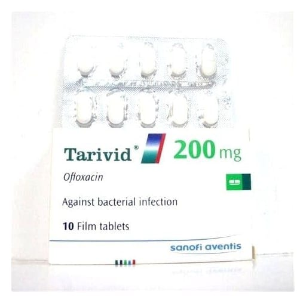

Tarivid 200 mg Film Kaplı Tablet, 10 Adet

Ne için kullanılır
KT · Bölüm 1TARİVİD, her film kaplı tablette 200 mg ofloksasin etkin maddesini içerir. Açık sarımsı beyaz renkte, her iki tarafı çentikli, film kaplı tabletlerdir. 10 ve 20 tablet film kaplı tablet içeren blister ambalajda kullanıma sunulmuştur.
TARİVİD 400 mg film kaplı tablet dozu da mevcuttur.
TARİVİD, bakterilerin neden olduğu enfeksiyonların tedavisinde kullanılan bir antibiyotiktir. Kinolonlar adı verilen bir antibakteriyal ilaç grubuna dahildir. TARİVİD duyarlı olan bakterileri öldürerek, bu bakterilerin vücutta neden olduğu enfeksiyonun tedavi edilmesini sağlar. Kronik bronşitin akut bakteriyel alevlenmesi ve komplike olmayan idrar yolu enfeksiyonlarında alternatif tedavi seçeneklerinin varlığında ciddi yan etki riski nedeniyle kullanılmamalıdır. Buna ilâve olarak idrar yolu enfeksiyonlarında antibiyogramla duyarlık kanıtlanması gerekmektedir.
2 | 14 Doktorunuz size TARİVİD’i aşağıdaki nedenlerden biri veya birkaçı dolayısıyla reçetelemiş olabilir: - İdrar yolu enfeksiyonlarının tedavisi (mesane ve böbrek enfeksiyonu)
- Erkeklerde ve kadınlarda üreme organlarındaki enfeksiyonların (örneğin cinsel yolla bulaşan bir hastalık olan gonore (bel soğukluğu)) tedavisi
- Pelvik enfeksiyonların (yumurtalık, rahim ve rahim boynu iltihabı) başka ilaçlarla kombinasyon halinde tedavisi
- Kemik veya eklemlerde meydana gelen enfeksiyonların tedavisi
- Deri ve kaslar dahil deri altındaki dokularda (yumuşak doku) oluşan enfeksiyonların tedavisi
- Sinüzit tedavisi
- Zatürre veya kronik solunum hastalıkları olan hastalarda bronş veya ciğerlerdeki enfeksiyonların tedavisi
- Vücutta enfeksiyonlara karşı direncin azaldığı durumlarda (örneğin, kanser) duyarlı bakterilere bağlı enfeksiyonlara yakalanmayı önlemek için koruyucu amaçla
Tedaviniz öncesinde doktorunuz durumunuzun belirli özelliklerini tespit ederek, TARİVİD kullanmanın sizin için uygun olup olmadığına karar verecektir.